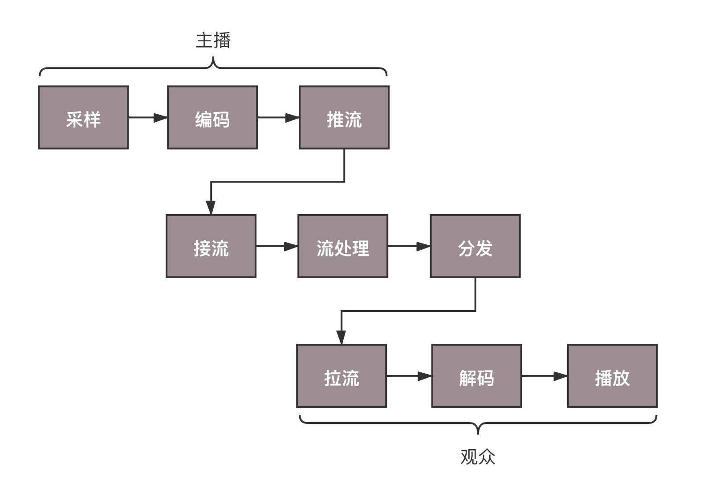
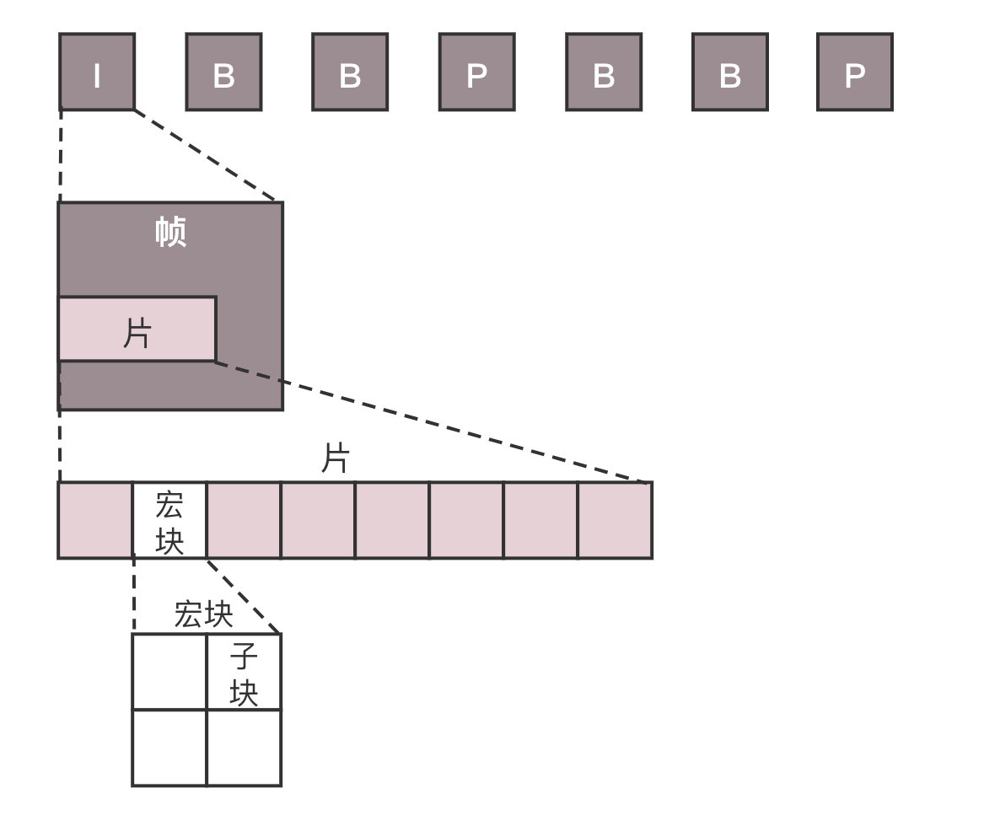
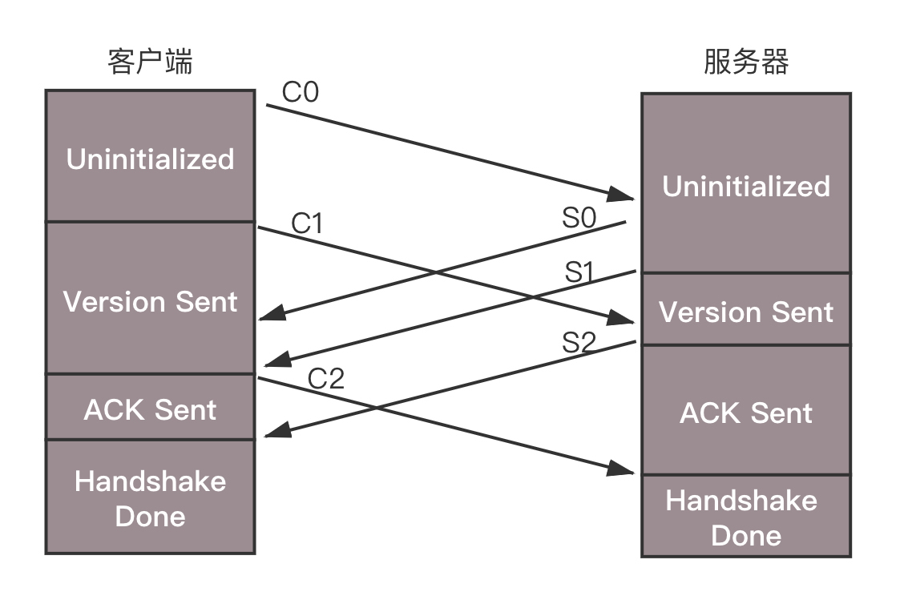
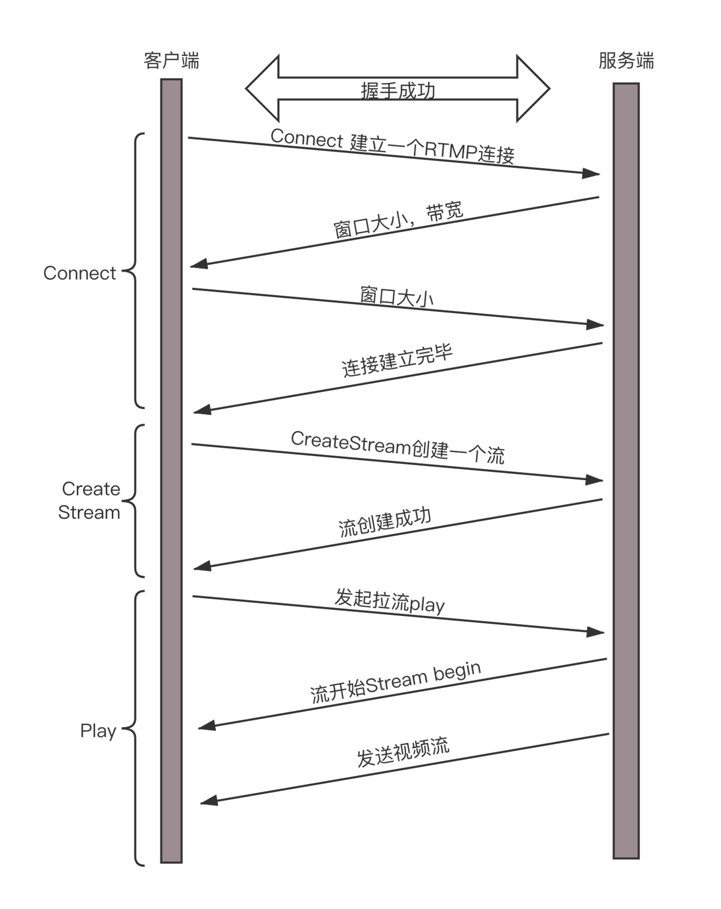

- 00 开篇词 想成为技术牛人？先搞定网络协议！.md.html
- 01 为什么要学习网络协议？.md.html
- 02 网络分层的真实含义是什么？.md.html
- 03 ifconfig：最熟悉又陌生的命令行.md.html
- 04 DHCP与PXE：IP是怎么来的，又是怎么没的？.md.html
- 05 从物理层到MAC层：如何在宿舍里自己组网玩联机游戏？.md.html
- 06 交换机与VLAN：办公室太复杂，我要回学校.md.html
- 07 ICMP与ping：投石问路的侦察兵.md.html
- 08 世界这么大，我想出网关：欧洲十国游与玄奘西行.md.html
- 09 路由协议：西出网关无故人，敢问路在何方.md.html
- 10 UDP协议：因性善而简单，难免碰到“城会玩”.md.html
- 11 TCP协议（上）：因性恶而复杂，先恶后善反轻松.md.html
- 12 TCP协议（下）：西行必定多妖孽，恒心智慧消磨难.md.html
- 13 套接字Socket：Talk is cheap, show me the code.md.html
- 14 HTTP协议：看个新闻原来这么麻烦.md.html
- 15 HTTPS协议：点外卖的过程原来这么复杂.md.html
- 16 流媒体协议：如何在直播里看到美女帅哥？.md.html
- 17 P2P协议：我下小电影，99%急死你.md.html
- 18 DNS协议：网络世界的地址簿.md.html
- 19 HttpDNS：网络世界的地址簿也会指错路.md.html
- 20 CDN：你去小卖部取过快递么？.md.html
- 21 数据中心：我是开发商，自己拿地盖别墅.md.html
- 22 VPN：朝中有人好做官.md.html
- 23 移动网络：去巴塞罗那，手机也上不了脸书.md.html
- 24 云中网络：自己拿地成本高，购买公寓更灵活.md.html
- 25 软件定义网络：共享基础设施的小区物业管理办法.md.html
- 26 云中的网络安全：虽然不是土豪，也需要基本安全和保障.md.html
- 27 云中的网络QoS：邻居疯狂下电影，我该怎么办？.md.html
- 28 云中网络的隔离GRE、VXLAN：虽然住一个小区，也要保护隐私.md.html
- 29 容器网络：来去自由的日子，不买公寓去合租.md.html
- 30 容器网络之Flannel：每人一亩三分地.md.html
- 31 容器网络之Calico：为高效说出善意的谎言.md.html
- 32 RPC协议综述：远在天边，近在眼前.md.html
- 33 基于XML的SOAP协议：不要说NBA，请说美国职业篮球联赛.md.html
- 34 基于JSON的RESTful接口协议：我不关心过程，请给我结果.md.html
- 35 二进制类RPC协议：还是叫NBA吧，总说全称多费劲.md.html
- 36 跨语言类RPC协议：交流之前，双方先来个专业术语表.md.html
- 37 知识串：用双十一的故事串起碎片的网络协议（上）.md.html
- 38 知识串：用双十一的故事串起碎片的网络协议（中）.md.html
- 39 知识串：用双十一的故事串起碎片的网络协议（下）.md.html
- 40 搭建一个网络实验环境：授人以鱼不如授人以渔.md.html
- 加餐1 创作故事：我是如何创作“趣谈网络协议”专栏的？.md.html
- 协议专栏特别福利 答疑解惑1期.md.html
- 协议专栏特别福利 答疑解惑2期.md.html
- 协议专栏特别福利 答疑解惑3期.md.html
- 协议专栏特别福利 答疑解惑4期.md.html
- 协议专栏特别福利 答疑解惑5期.md.html
- 结束语 放弃完美主义，执行力就是限时限量认真完成.md.html
- 捐赠
16 流媒体协议：如何在直播里看到美女帅哥？
最近直播比较火，很多人都喜欢看直播，那一个直播系统里面都有哪些组成部分，都使用了什么协议呢？
无论是直播还是点播，其实都是对于视频数据的传输。一提到视频，大家都爱看，但是一提到视频技术，大家都头疼，因为名词实在是太多了。
三个名词系列
我这里列三个名词系列，你先大致有个印象。
名词系列一：AVI、MPEG、RMVB、MP4、MOV、FLV、WebM、WMV、ASF、MKV。例如RMVB和MP4，看着是不是很熟悉？
名词系列二：H.261、 H.262、H.263、H.264、H.265。这个是不是就没怎么听过了？别着急，你先记住，要重点关注H.264。
名词系列三：MPEG-1、MPEG-2、MPEG-4、MPEG-7。MPEG好像听说过，但是后面的数字是怎么回事？是不是又熟悉又陌生？
这里，我想问你个问题，视频是什么？我说，其实就是快速播放一连串连续的图片。
每一张图片，我们称为一帧。只要每秒钟帧的数据足够多，也即播放得足够快。比如每秒30帧，以人的眼睛的敏感程度，是看不出这是一张张独立的图片的，这就是我们常说的帧率（FPS）。
每一张图片，都是由像素组成的，假设为1024*768（这个像素数不算多）。每个像素由RGB组成，每个8位，共24位。
我们来算一下，每秒钟的视频有多大？
30帧 × 1024 × 768 × 24 = 566,231,040Bits = 70,778,880Bytes
如果一分钟呢？4,246,732,800Bytes，已经是4个G了。
是不是不算不知道，一算吓一跳？这个数据量实在是太大，根本没办法存储和传输。如果这样存储，你的硬盘很快就满了；如果这样传输，那多少带宽也不够用啊！
怎么办呢？人们想到了编码，就是看如何用尽量少的Bit数保存视频，使播放的时候画面看起来仍然很精美。编码是一个压缩的过程。
视频和图片的压缩过程有什么特点？
之所以能够对视频流中的图片进行压缩，因为视频和图片有这样一些特点。
空间冗余：图像的相邻像素之间有较强的相关性，一张图片相邻像素往往是渐变的，不是突变的，没必要每个像素都完整地保存，可以隔几个保存一个，中间的用算法计算出来。
时间冗余：视频序列的相邻图像之间内容相似。一个视频中连续出现的图片也不是突变的，可以根据已有的图片进行预测和推断。
视觉冗余：人的视觉系统对某些细节不敏感，因此不会每一个细节都注意到，可以允许丢失一些数据。
编码冗余：不同像素值出现的概率不同，概率高的用的字节少，概率低的用的字节多，类似霍夫曼编码（Huffman Coding）的思路。
总之，用于编码的算法非常复杂，而且多种多样，但是编码过程其实都是类似的。
视频编码的两大流派
能不能形成一定的标准呢？要不然开发视频播放的人得累死了。当然能，我这里就给你介绍，视频编码的两大流派。
流派一：ITU（International Telecommunications Union）的VCEG（Video Coding Experts Group），这个称为国际电联下的VCEG。既然是电信，可想而知，他们最初做视频编码，主要侧重传输。名词系列二，就是这个组织制定的标准。
流派二：ISO（International Standards Organization）的MPEG（Moving Picture Experts Group），这个是ISO旗下的MPEG，本来是做视频存储的。例如，编码后保存在VCD和DVD中。当然后来也慢慢侧重视频传输了。名词系列三，就是这个组织制定的标准。
后来，ITU-T（国际电信联盟电信标准化部门，ITU Telecommunication Standardization Sector）与MPEG联合制定了H.264/MPEG-4 AVC，这才是我们这一节要重点关注的。
经过编码之后，生动活泼的一帧一帧的图像，就变成了一串串让人看不懂的二进制，这个二进制可以放在一个文件里面，按照一定的格式保存起来，这就是名词系列一。
其实这些就是视频保存成文件的格式。例如，前几个字节是什么意义，后几个字节是什么意义，然后是数据，数据中保存的就是编码好的结果。
如何在直播里看到帅哥美女？
当然，这个二进制也可以通过某种网络协议进行封装，放在互联网上传输，这个时候就可以进行网络直播了。
网络协议将编码好的视频流，从主播端推送到服务器，在服务器上有个运行了同样协议的服务端来接收这些网络包，从而得到里面的视频流，这个过程称为接流。
服务端接到视频流之后，可以对视频流进行一定的处理，例如转码，也即从一个编码格式，转成另一种格式。因为观众使用的客户端千差万别，要保证他们都能看到直播。
流处理完毕之后，就可以等待观众的客户端来请求这些视频流。观众的客户端请求的过程称为拉流。
如果有非常多的观众，同时看一个视频直播，那都从一个服务器上拉流，压力太大了，因而需要一个视频的分发网络，将视频预先加载到就近的边缘节点，这样大部分观众看的视频，是从边缘节点拉取的，就能降低服务器的压力。
当观众的客户端将视频流拉下来之后，就需要进行解码，也即通过上述过程的逆过程，将一串串看不懂的二进制，再转变成一帧帧生动的图片，在客户端播放出来，这样你就能看到美女帅哥啦。
整个直播过程，可以用这个的图来描述。
- 接下来，我们依次来看一下每个过程。
编码：如何将丰富多彩的图片变成二进制流？
虽然我们说视频是一张张图片的序列，但是如果每张图片都完整，就太大了，因而会将视频序列分成三种帧。
I帧，也称关键帧。里面是完整的图片，只需要本帧数据，就可以完成解码。
P帧，前向预测编码帧。P帧表示的是这一帧跟之前的一个关键帧（或P帧）的差别，解码时需要用之前缓存的画面，叠加上和本帧定义的差别，生成最终画面。
B帧，双向预测内插编码帧。B帧记录的是本帧与前后帧的差别。要解码B帧，不仅要取得之前的缓存画面，还要解码之后的画面，通过前后画面的数据与本帧数据的叠加，取得最终的画面。
可以看出，I帧最完整，B帧压缩率最高，而压缩后帧的序列，应该是在IBBP的间隔出现的。这就是通过时序进行编码。

在一帧中，分成多个片，每个片中分成多个宏块，每个宏块分成多个子块，这样将一张大的图分解成一个个小块，可以方便进行空间上的编码。
尽管时空非常立体地组成了一个序列，但是总归还是要压缩成一个二进制流。这个流是有结构的，是一个个的网络提取层单元（NALU，Network Abstraction Layer Unit）。变成这种格式就是为了传输，因为网络上的传输，默认的是一个个的包，因而这里也就分成了一个个的单元。
每一个NALU首先是一个起始标识符，用于标识NALU之间的间隔；然后是NALU的头，里面主要配置了NALU的类型；最终Payload里面是NALU承载的数据。
在NALU头里面，主要的内容是类型NAL Type。
0x07表示SPS，是序列参数集， 包括一个图像序列的所有信息，如图像尺寸、视频格式等。
0x08表示PPS，是图像参数集，包括一个图像的所有分片的所有相关信息，包括图像类型、序列号等。
在传输视频流之前，必须要传输这两类参数，不然无法解码。为了保证容错性，每一个I帧前面，都会传一遍这两个参数集合。
如果NALU Header里面的表示类型是SPS或者PPS，则Payload中就是真正的参数集的内容。
如果类型是帧，则Payload中才是正的视频数据，当然也是一帧一帧存放的，前面说了，一帧的内容还是挺多的，因而每一个NALU里面保存的是一片。对于每一片，到底是I帧，还是P帧，还是B帧，在片结构里面也有个Header，这里面有个类型，然后是片的内容。
这样，整个格式就出来了，一个视频，可以拆分成一系列的帧，每一帧拆分成一系列的片，每一片都放在一个NALU里面，NALU之间都是通过特殊的起始标识符分隔，在每一个I帧的第一片前面，要插入单独保存SPS和PPS的NALU，最终形成一个长长的NALU序列。
推流：如何把数据流打包传输到对端？
那这个格式是不是就能够直接在网上传输到对端，开始直播了呢？其实还不是，还需要将这个二进制的流打包成网络包进行发送，这里我们使用RTMP协议。这就进入了第二个过程，推流。
RTMP是基于TCP的，因而肯定需要双方建立一个TCP的连接。在有TCP的连接的基础上，还需要建立一个RTMP的连接，也即在程序里面，你需要调用RTMP类库的Connect函数，显示创建一个连接。
RTMP为什么需要建立一个单独的连接呢？
因为它们需要商量一些事情，保证以后的传输能正常进行。主要就是两个事情，一个是版本号，如果客户端、服务器的版本号不一致，则不能工作。另一个就是时间戳，视频播放中，时间是很重要的，后面的数据流互通的时候，经常要带上时间戳的差值，因而一开始双方就要知道对方的时间戳。
未来沟通这些事情，需要发送六条消息：客户端发送C0、C1、 C2，服务器发送S0、 S1、 S2。
首先，客户端发送C0表示自己的版本号，不必等对方的回复，然后发送C1表示自己的时间戳。
服务器只有在收到C0的时候，才能返回S0，表明自己的版本号，如果版本不匹配，可以断开连接。
服务器发送完S0后，也不用等什么，就直接发送自己的时间戳S1。客户端收到S1的时候，发一个知道了对方时间戳的ACK C2。同理服务器收到C1的时候，发一个知道了对方时间戳的ACK S2。
于是，握手完成。

握手之后，双方需要互相传递一些控制信息，例如Chunk块的大小、窗口大小等。
真正传输数据的时候，还是需要创建一个流Stream，然后通过这个Stream来推流publish。
推流的过程，就是将NALU放在Message里面发送，这个也称为RTMP Packet包。Message的格式就像这样。
发送的时候，去掉NALU的起始标识符。因为这部分对于RTMP协议来讲没有用。接下来，将SPS和PPS参数集封装成一个RTMP包发送，然后发送一个个片的NALU。
RTMP在收发数据的时候并不是以Message为单位的，而是把Message拆分成Chunk发送，而且必须在一个Chunk发送完成之后，才能开始发送下一个Chunk。每个Chunk中都带有Message ID，表示属于哪个Message，接收端也会按照这个ID将Chunk组装成Message。
前面连接的时候，设置的Chunk块大小就是指这个Chunk。将大的消息变为小的块再发送，可以在低带宽的情况下，减少网络拥塞。
这有一个分块的例子，你可以看一下。
假设一个视频的消息长度为307，但是Chunk大小约定为128，于是会拆分为三个Chunk。
第一个Chunk的Type＝0，表示Chunk头是完整的；头里面Timestamp为1000，总长度Length 为307，类型为9，是个视频，Stream ID为12346，正文部分承担128个字节的Data。
第二个Chunk也要发送128个字节，Chunk头由于和第一个Chunk一样，因此采用Chunk Type＝3，表示头一样就不再发送了。
第三个Chunk要发送的Data的长度为307-128-128=51个字节，还是采用Type＝3。
就这样数据就源源不断到达流媒体服务器，整个过程就像这样。

这个时候，大量观看直播的观众就可以通过RTMP协议从流媒体服务器上拉取，但是这么多的用户量，都去同一个地方拉取，服务器压力会很大，而且用户分布在全国甚至全球，如果都去统一的一个地方下载，也会时延比较长，需要有分发网络。
分发网络分为中心和边缘两层。边缘层服务器部署在全国各地及横跨各大运营商里，和用户距离很近。中心层是流媒体服务集群，负责内容的转发。智能负载均衡系统，根据用户的地理位置信息，就近选择边缘服务器，为用户提供推/拉流服务。中心层也负责转码服务，例如，把RTMP协议的码流转换为HLS码流。
这套机制在后面的DNS、HTTPDNS、CDN的章节会更有详细的描述。
拉流：观众的客户端如何看到视频？
接下来，我们再来看观众的客户端通过RTMP拉流的过程。

先读到的是H.264的解码参数，例如SPS和PPS，然后对收到的NALU组成的一个个帧，进行解码，交给播发器播放，一个绚丽多彩的视频画面就出来了。
小结
好了，今天的内容就到这里了，我们来总结一下：
视频名词比较多，编码两大流派达成了一致，都是通过时间、空间的各种算法来压缩数据；
压缩好的数据，为了传输组成一系列NALU，按照帧和片依次排列；
排列好的NALU，在网络传输的时候，要按照RTMP包的格式进行包装，RTMP的包会拆分成Chunk进行传输；
推送到流媒体集群的视频流经过转码和分发，可以被客户端通过RTMP协议拉取，然后组合为NALU，解码成视频格式进行播放。
最后，给你留两个思考题：
你觉得基于RTMP的视频流传输的机制存在什么问题？如何进行优化？
在线看视频之前，大家都是把电影下载下来看的，电影这么大，你知道如何快速下载吗？
欢迎你留言和我讨论。趣谈网络协议，我们下期见！
© 2019 - 2023 Liangliang Lee. Powered by gin and hexo-theme-book.